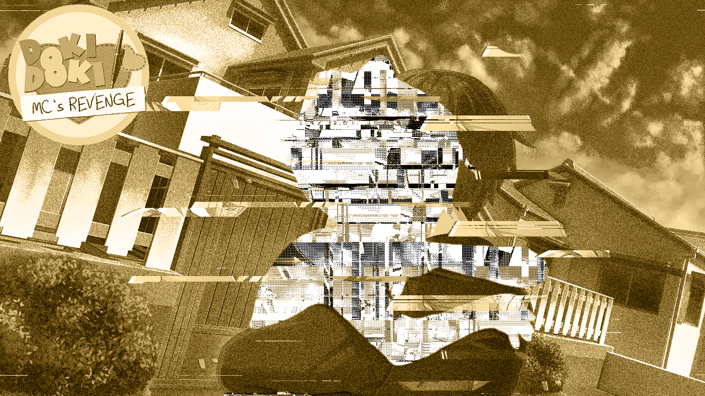

MC's Revenge
E se o protagonista se tornasse senciente e autoconsciente como a Monika? O que aconteceria se ele percebesse todos os eventos distorcidos acontecendo ao seu redor? Como ele reagirá quando perceber que tudo isso é apenas um jogo? Em MC's Revenge, a história começa no segundo ato de DDLC. No entanto, desta vez a escolha está em suas mãos, como Jogador, para decidir como tudo terminará. Você os ajudará a encontrar a felicidade no clube de literatura... ou suas ações apenas causarão mais sofrimento?
⬇ Download